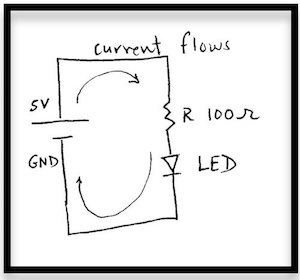
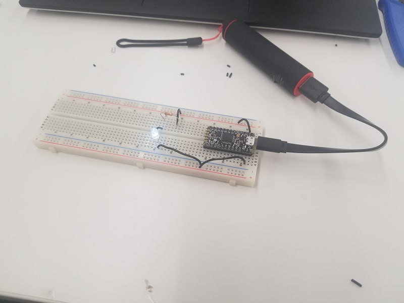
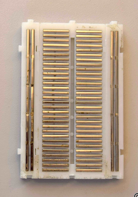
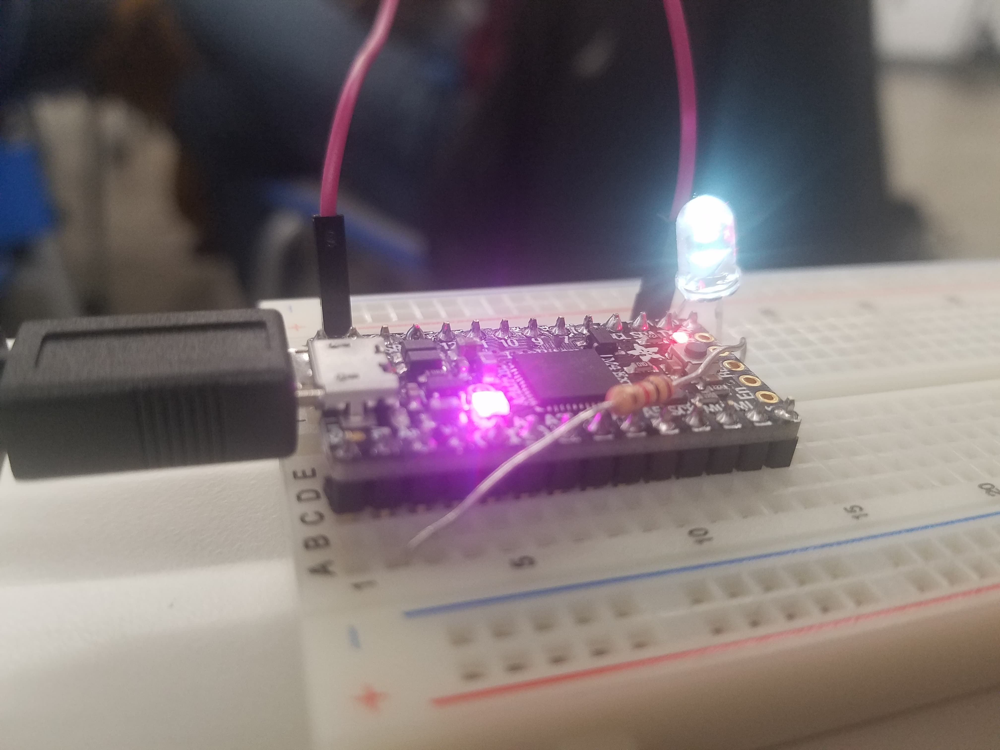
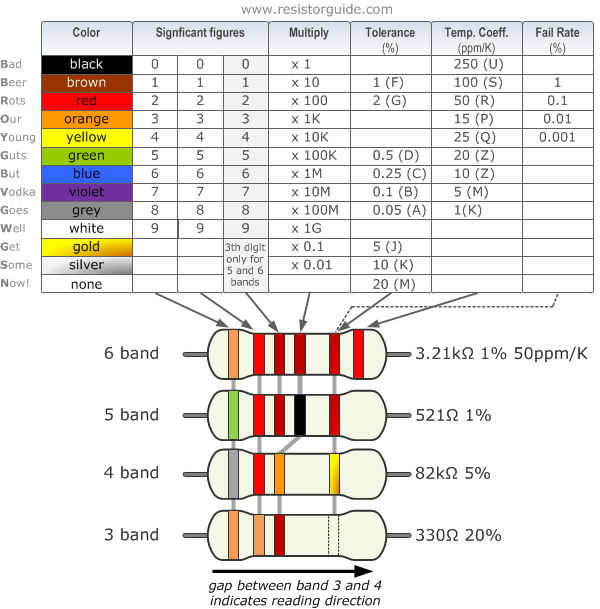
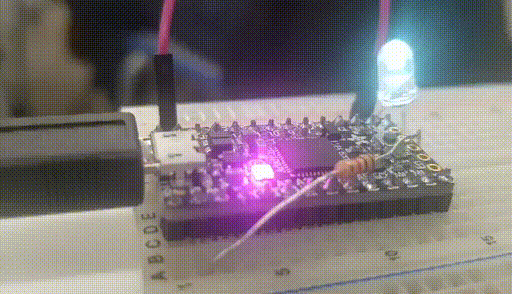

For the first week of class, we experimented with microcontrollers, building our first circuits on breadboards. Loosely following a guide introducing basic electronics, I built a circuit using the Adafruit ItsyBitsy M4 controller. The circuit I set out to build can be represented in the following diagram:

For power source (5V) and ground (GND), I used the 3V and GND terminals of the microcontroller respectively. After fun stripping and cutting wires, I assembled the circuit as below:

My circuit did not work on the first try as I had reversed the direction of the LED. By switching the location of the two legs, I was able to get the LED to light up.
After assembling the initial circuit, I wanted to learn more about the underlying connections within the breadboard. I looked at the conducting and insulating materials on the underside of example breadboards that had been deconstructed. It looked something like this:

I then attempted to make a circuit that eliminated all of the wire pieces I had used initially, with the result here:

On this circuit I used a multimeter to measure voltage differences across the resistor and LED. There was a 0.667V reading across the resistor and a 2.333V reading across the LED. This means first that the voltage is monotonically decreasing throughout the circuit and second that all 3V that we started with were “used.” The bands across the resistor indicate that it is a 1k Ohm resistor:

Using Ohm’s law, we then know that the current through the resistor is: $$I=\frac{V}{R}=\frac{0.667V}{1000 \Omega}=0.667 mA$$ Current is constant through a series circuit so this is also the current through the LED.
Lastly, I used the Arduino IDE to get the built-in LED on the microcontroller to blink.

This did not work immediately either. I plugged the MicroUSB adapter from the microcontroller into a USB port on my computer, but the Arduino IDE was unable to access this port unless I ran the program as a root user. After reinstalling the Adafruit board for the root user, I was able to detect the board and run the blink example program.
Project Ideas
I’ve been and will continue to brainstorm project ideas but I’m sure these will change as I better understand what is feasible and what is not.
-
Biotracking ring: Since getting a smartwatch, I’ve been able to track my heart rate and sleep. I’ve been frustrated with the need to manually enter activities (when am I walking, running, etc.), the inability to track my precise location, and inability to automatically connect to wifi and back up data (the interface provided on my phone is far from ideal). I would like to create a more compact and stylish device that provides these functions.
-
Autonomous Skateboard: I recently built a longboard and think a second iteration of skateboard construction would lead to a better final product. I’d like to modify the board to be electrically powered, and possibly to have some steering capabilities. While full autonomy might not be possible (e.g. intersections would be very difficult) steering around objects in a classroom could be an interesting challenge.
-
Micro Keyboard: I’ve seen collapsible keyboards but they often fold up when not on a flat surface. I’d like to use my phone as my computer (ssh).
-
Pose Tracking Clothes Inserts: Similar to bio tracking, I’d like to have inserts for my socks and shirt sleeves to track how my body is moving throughout the day. They’d need to be removable so that I can wash my clothes!
-
Solar powered X: ???